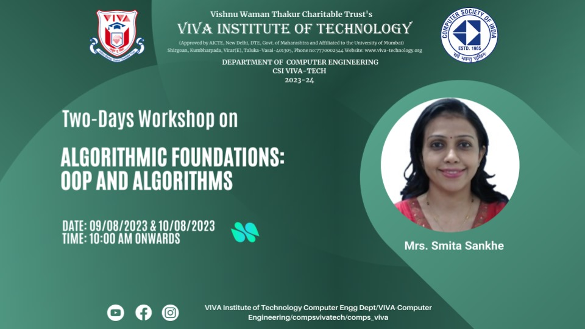
9th August 2023
The workshop's objective was to underscore the significance of Algorithmic Foundations among students. It
spanned two
days 9th and 10th August, offering live hands-on experience to SE department of computer engineering
students. The
workshop delved into the significance of OOPs and algorithms for technical interviews and company insights.
Students
actively engaged with the speaker through interactive sessions. In summation, the workshop achieved its
goals
successfully.
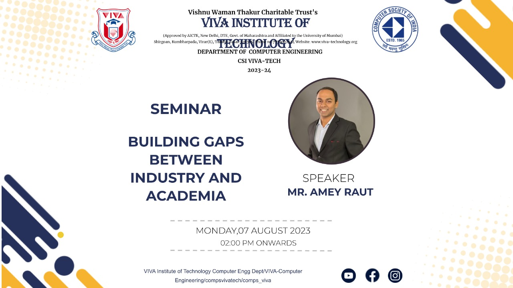
7th August 2023
The seminar's purpose was to highlight the significance of bridging the gap between Industry and Academia,
essential
domains in their own right. SE and TE students enthusiastically engaged in discussions and interactive
sessions. The
event underscored practical skills, real-world applications, and industry trends. It served as a valuable
platform for
students to interact with experienced professional, gaining insights into industry expectations. Overall,
the seminar
enriched students' comprehension of how academic knowledge harmonizes with industry requirements, better
equipping them
for prosperous careers.
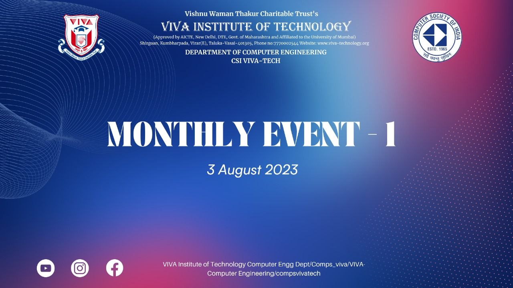
3rd August 2023
The event was arranged to provide students with the opportunity to relax and engage in various activities.
Students from
the computer department actively participated in games such as Pictionary Relay, Code Hunt, TechChain
TechJumble.
Participants enthusiastically competed and successfully completed all tasks to qualify for the finals.
Ultimately, the
event was a source of enjoyment for everyone in the department, with a significant turnout from SE, TE, and
BE.
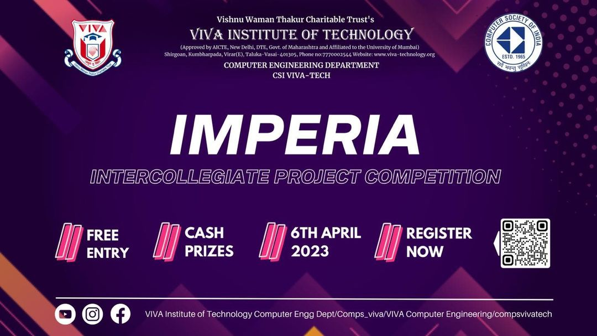
6th April 2023
Imperia 2023 was an intercollegiate project competition successfully conducted on 6
th of April
2023 by CSI VIVA-TECH. The competition was arranged in two parts comprising of a block of
Second year and Third year projects and a second block consisting of Fourth year projects. The
projects were worked on by the students for the duration of an entire year and comprised of
various computer related domains such as Cybersecurity, Web Development, Android
Applications, etc. and they provided innovative solutions to several real world problems as noted
by the respected judges.

31st March 2023
Techspark 4.0 was a technical paper presentation event conducted on 31
st March 2023 and
comprised of groups that surveyed several research papers and developed a literature survey
on the same. The event required the participants of the event to develop the literature survey by
the IEEE global format and present the same in front of a panel of judges with the help of a
Powerpoint Presentation. The event provided the participants as well as the audience with
awareness regarding cutting-edge research and technology which was also simplified by the
participants so as to make it easier for the audience to understand the topic of their research.
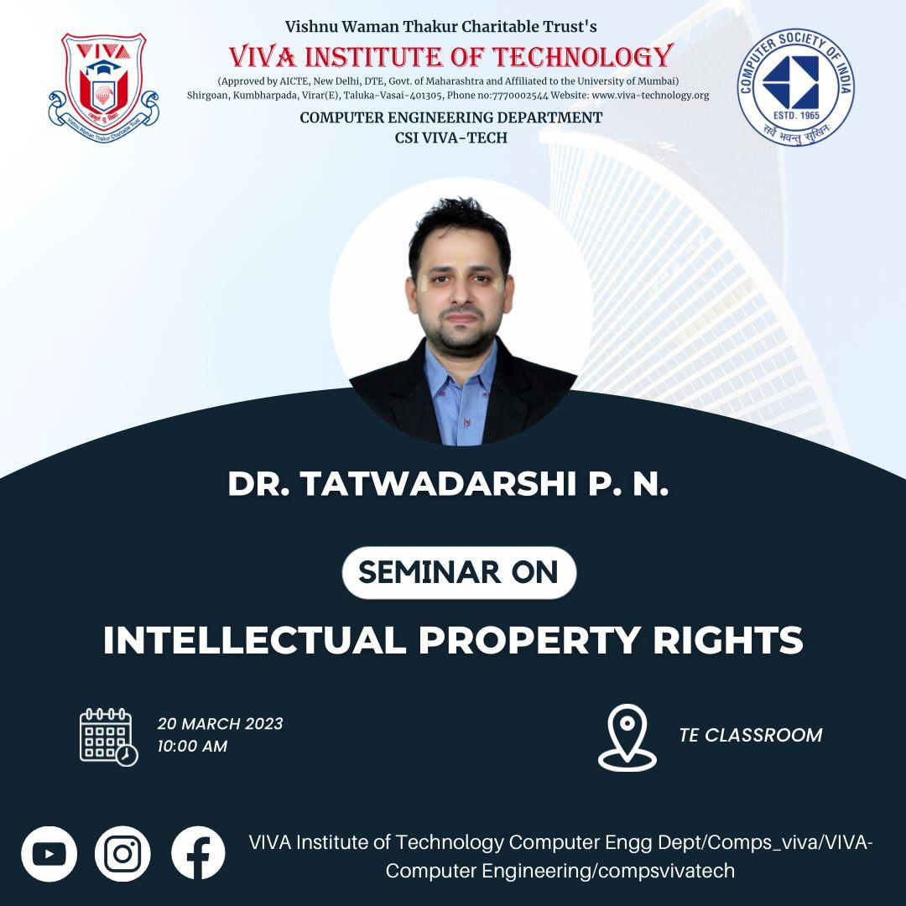
20th March 2023
The Seminar on Intellectual Property Rights (IPR) for Students was a dynamic and enlightening
event designed to empower young minds with the knowledge and significance of intellectual
property in today's creative and innovative world.Participants were introduced to the process of
obtaining and safeguarding intellectual property rights, demystifying the complexities
surrounding the registration, enforcement, and licensing of these rights.Students were
encouraged to be responsible digital citizens and to be aware of the ethical implications of their
actions in the digital age and this Interactive sessions and case studies allowed students to
engage actively in discussions.

17th March 2023
Alumni lecture was organized to get students to focus on the importance of cybersecurity. The
Alumina Lecture was an insightful and thought-provoking event that delved into the critical world
of digital security and its vital role in protecting our interconnected society. Attendees were
urged to adopt best practices in safeguarding their online presence, emphasizing the role
everyone plays in creating a more secure digital environment.As technology continues to
advance, events like this are instrumental in fostering awareness, knowledge-sharing, and
collective efforts to fortify the digital frontier against cyber threats.One of the lecturer's focal
points was the importance of promoting a cybersecurity culture, not just within organizations but
also among students.

3rd March 2023
The Wildlife photography competition event was organized for the Computer Department, in which
students from SE, TE, and final year participated with great enthusiasm. Photographs were displayed on
the department's social media account. The event, organized by the CSI committee, proved to be a
resounding success, as it not only showcased the students' artistic talents but also provided a platform
for recognizing their creative skills. Winners were selected based on their outstanding submissions,
making it a memorable and rewarding experience for everyone involved.

28th February 2023
The digital poster making competition event was organized for the Computer Department, in
which students from SE, TE, and final year participated with great enthusiasm. Each group was
assigned specific topics, and the posters were displayed on the department's social media
account. The event, organized by the CSI committee, proved to be a resounding success, as it
not only showcased the students' artistic talents but also provided a platform for recognizing
their creative skills. Winners were selected based on their outstanding submissions, making it a
memorable and rewarding experience for everyone involved.
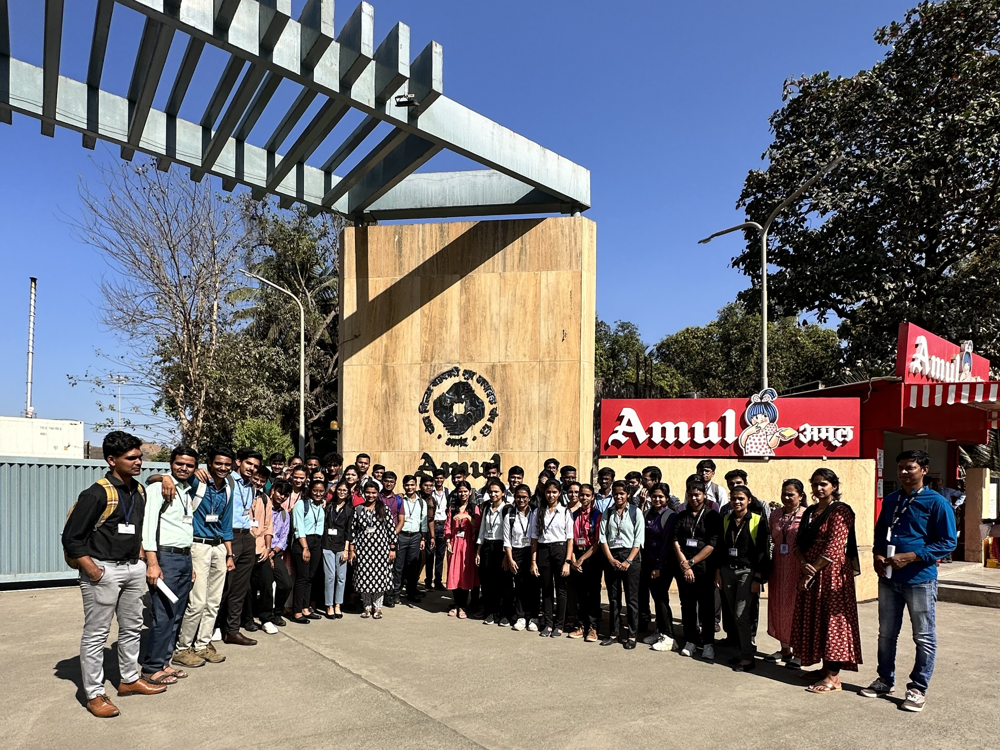
17th February 2023
Industrial visit for the students of second year computer engineering department, was arranged at AMUL
India Ltd. Mr. Dhiraj Chauhan the co-ordinator who gave an overall visit of the plant there. Ice-creams and
other products of AMUL where offered to students. It was a new experience for students, they got to know how
the products are actually made on amul and got an overview of all the new machinary there. It was an overall
sucessfull Industrial Visit heldby CSI.
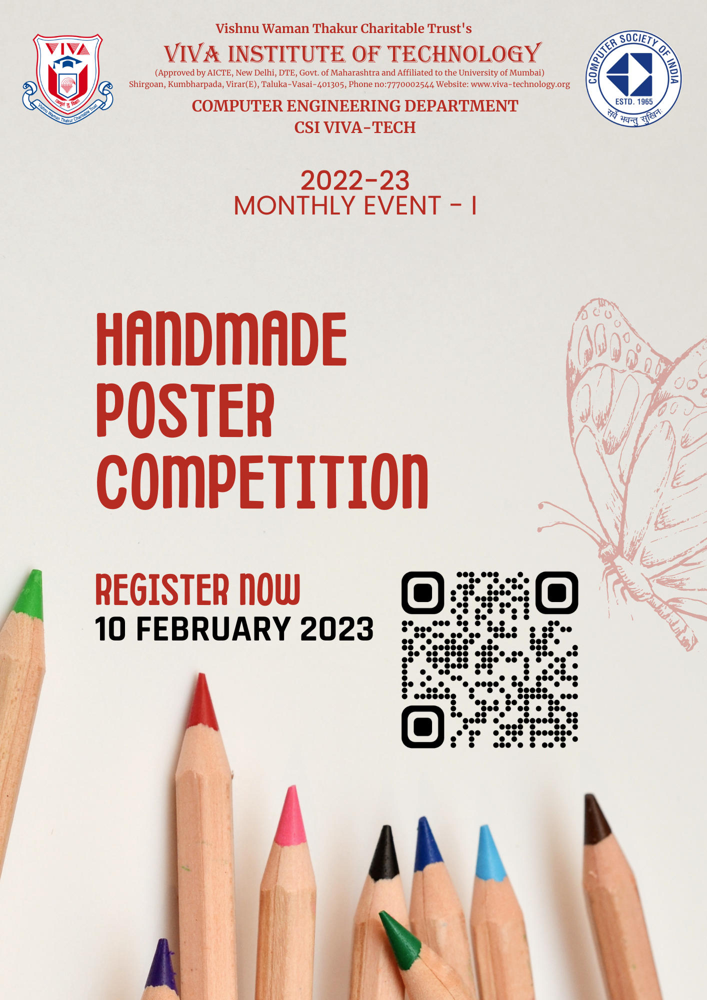
10th February 2023
Poster making competition was held for all computer department students. Topics were allocated to SE, TE
and final year students, participants participated with enthusiasm. Posters were displayed on the primises
and according to the vote by students as well as faculty members winners for the competition were selected.
Artistic skills of students were recognized. Overall the event held by CSI comittee was a sucess.
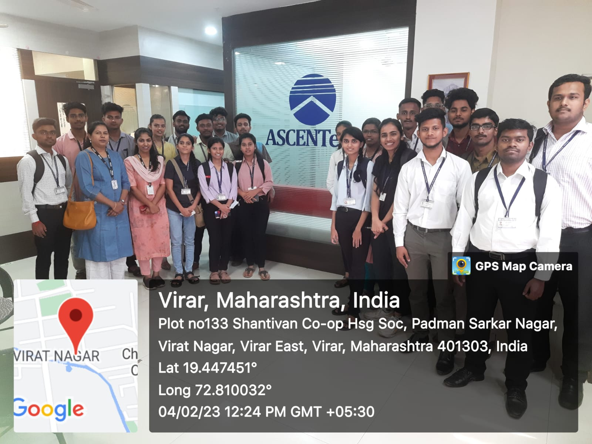
4th February 2023
Industrial visit for the students of third year computer engineering department, was arranged at ASCENTech
comapany, students gained knowledge about how the technical field works as well as the guidance given by the
mentor over ASCENTech which shared a word of advice over development of a project.

03rd February 2023
A webinar on the idea of Soft Skills was arranged for computer department and MCA students. Ms. Swati
Ranjith, the session's speaker, shared her expertise of soft skills and its impact in everyone's regular
lifestyle. The environment was intriguing. Students engaged by interacting and questioning. Overall, the
webinar was a success.
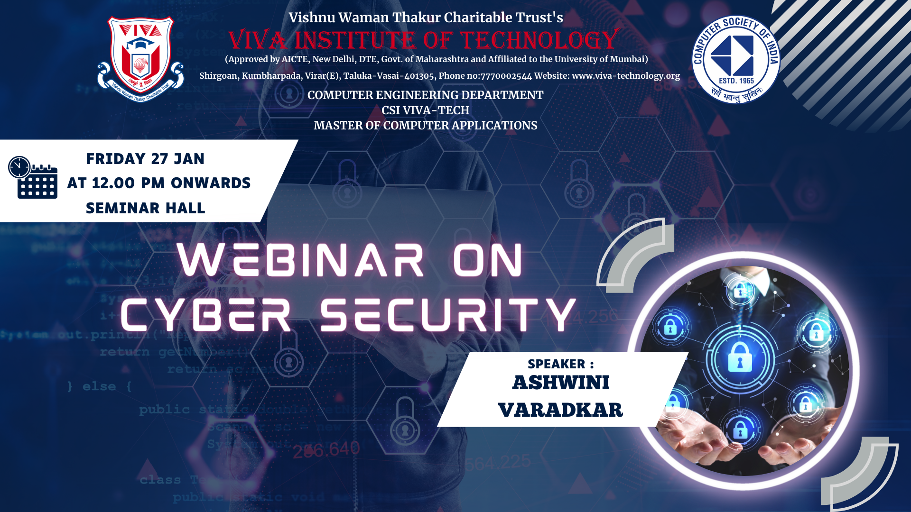
27th January 2023
The Webinar was organized to bring in the importance of Security within students. The Webinar was conducted
for Computer and MCA department students. Importance of cybersecurity and the necessity of undertsanding it
for industry use were fully disscussed. Cybersecurity being a vast field as well important for all
application it was very helpful for everyone. Students interacted with the guest by questioning. Overall the
seminar was a sucess.
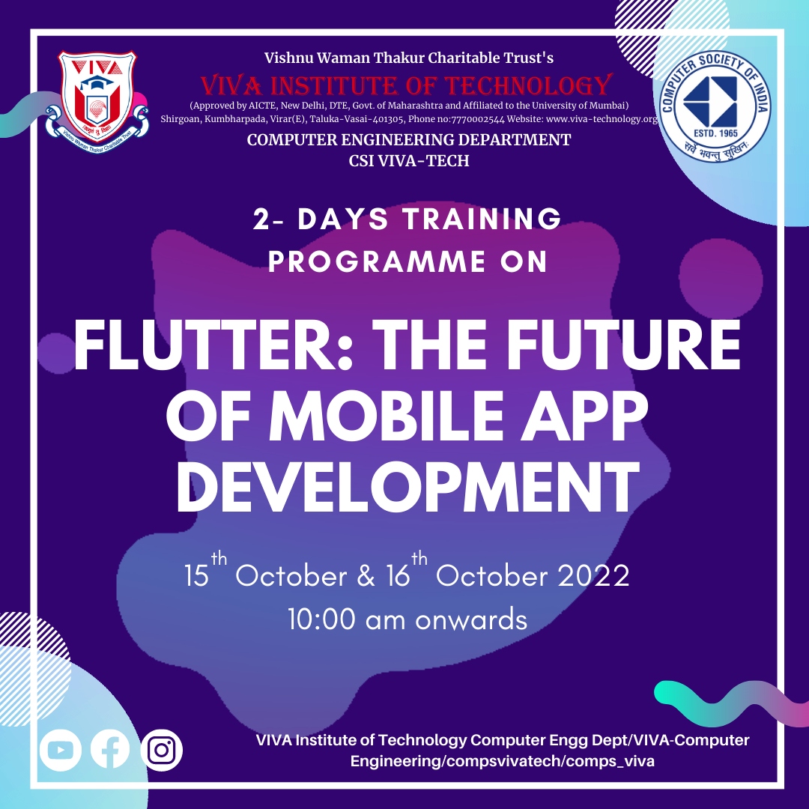
15th October 2022
The Seminar was organized to bring in the importance of Flutter within students. This seminar was 2 days
live hands-on seminar conducted for Computer and MCA department students. Importance of flutter in Android
application and the necessity of undertsanding flutter for industry use were disscussed. Students interacted
with the guest by questioning. Overall the seminar was a sucess.
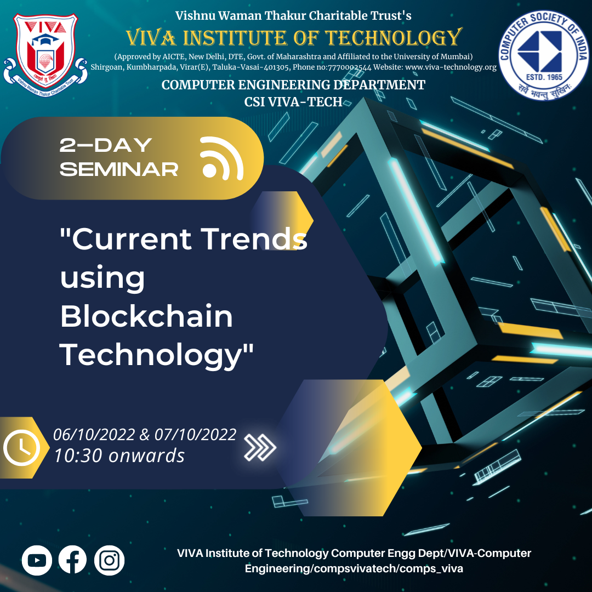
06th October 2022
The Seminar was organized to bring in the importance of blockchain within students. 2 days live hands-on
seminar was conducted for Computer and MCA department students. Cryptocurrency, Security and also the
importance of Web3 in the industrial were disscussed. Students interacted with the guest by questioning. It
was a sucessful live seminar.
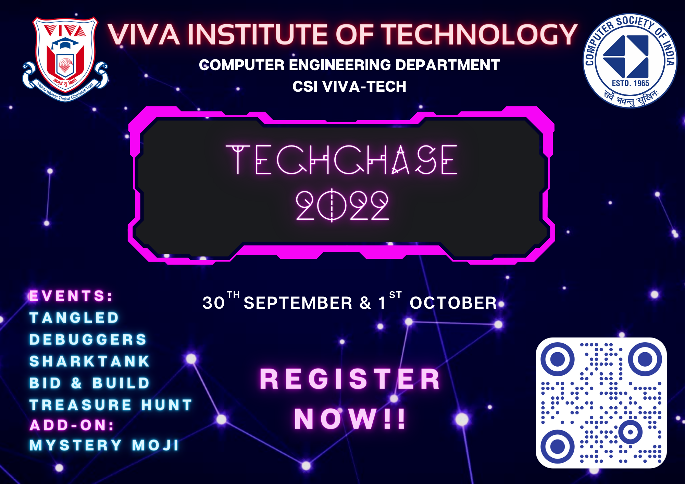
31st September 2022
The event was organized for students of every department. It was a zestful event, many technical games were
organised by CSI committee as Bit and build, tangled and LAN games. Students from all department
participated with full enthusiasm. Tangled organized by the students of computer department won the best
event award.

23rd September 2022
The event was organized to celebrate Engineers day. Students from department shared their talented skills
like, magic tricks, photography, artworks mathematical skills and also with internship experience. Student
placed with top packages from batch 2022 where also introduced to encourage the juniors. Teachers and
students showed immense participation in games like Tic-Tac-Toe, Rubik's cube and logo-gusser(Pehchan kaun).

14th September 2022
The Guest lecture was organized to introduce significance of software testing in IT world. Students got the
understanding of various elements needed to become a software tester, and showed how they test on software
live. Career guidance was given to students for setting up their realistic goals. Direct communication was
done with the lecturer to resolve certain queries.

18th August 2022
The event was organized for students to sit back and participate in different activities. Students from
department took part in debate, quiz and memeoy game. Quiz was based on technical questions, memory game was
enjoyable for all and debate showcased their communication and confidence. Overall the event was a sucess.

8th August 2022
The Seminar was organized to bring in the importance of IOT within students. cloud-computing, machine
learning and the industrial need IOT such elements were disscussed. Students interacted with the guest by
questioning. The speaker showed some live IOT product that cleared the idea of students.
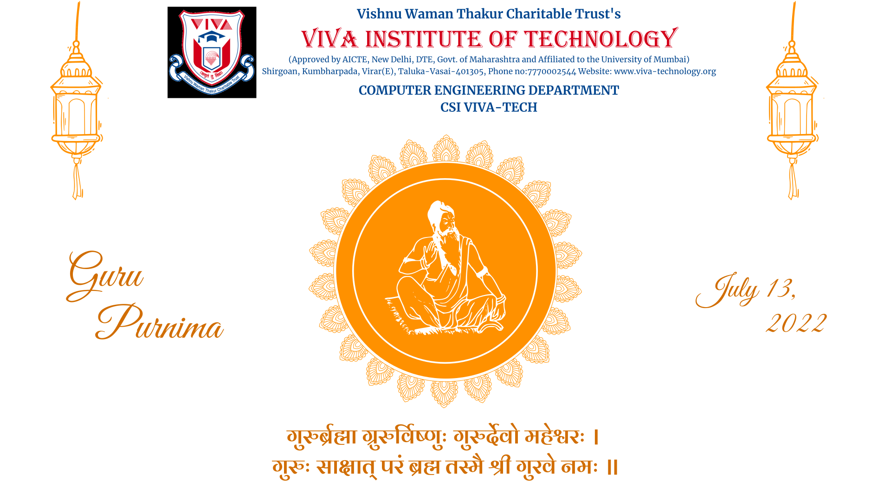
13th July 2022
On the occasion of Guru Purnima, an event was conducted by CSI-VIVA Tch. Students from the department
shared their participation and gave a performance, students shared their respect through speech and songs.